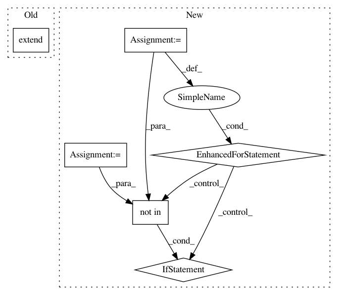

bfb1453dd22fd12c69e314e0995499e3f4835614,src/python/twitter/pants/tasks/jvm_task.py,JvmTask,classpath,#JvmTask#Any#Any#,25
Before Change
// TODO(John Sirois): undo cheeseball! - derive src/resources from target attribute and then
// later fix tests to declare their resources as well?
classpath.extend(os.path.join(get_buildroot(), path)
for path in ("src/resources", "tests/resources"))
return classpath
After Change
// TODO(John Sirois): Fixup jvm test targets to declare their resources and fixup resources to
// be their own target libraries or tests then depend on:
// http://jira.local.twitter.com/browse/AWESOME-108
bases = set()
for target in self.context.targets():
if isinstance(target, JvmTarget) and (is_test(target) or hasattr(target, "resources")):
if target.target_base not in bases:
sibling_resources_base = os.path.join(os.path.dirname(target.target_base), "resources")
classpath.append(os.path.join(get_buildroot(), sibling_resources_base))
bases.add(target.target_base)
return classpath
In pattern: SUPERPATTERN
Frequency: 3
Non-data size: 6
Instances
Project Name: pantsbuild/pants
Commit Name: bfb1453dd22fd12c69e314e0995499e3f4835614
Time: 2012-10-31
Author: jsirois@twitter.com
File Name: src/python/twitter/pants/tasks/jvm_task.py
Class Name: JvmTask
Method Name: classpath
Project Name: commonsense/conceptnet5
Commit Name: f75251dc1e633c2b3ac0db1ab8ee8707e891c931
Time: 2016-06-09
Author: rob@luminoso.com
File Name: conceptnet5/builders/combine_assertions.py
Class Name:
Method Name: make_assertion
Project Name: tensorflow/benchmarks
Commit Name: 4632d4f82c8d9dec22f619170d61c574e0e28f51
Time: 2018-08-29
Author: laigd@google.com
File Name: scripts/tf_cnn_benchmarks/benchmark_cnn.py
Class Name: BenchmarkCNN
Method Name: _build_model_single_session